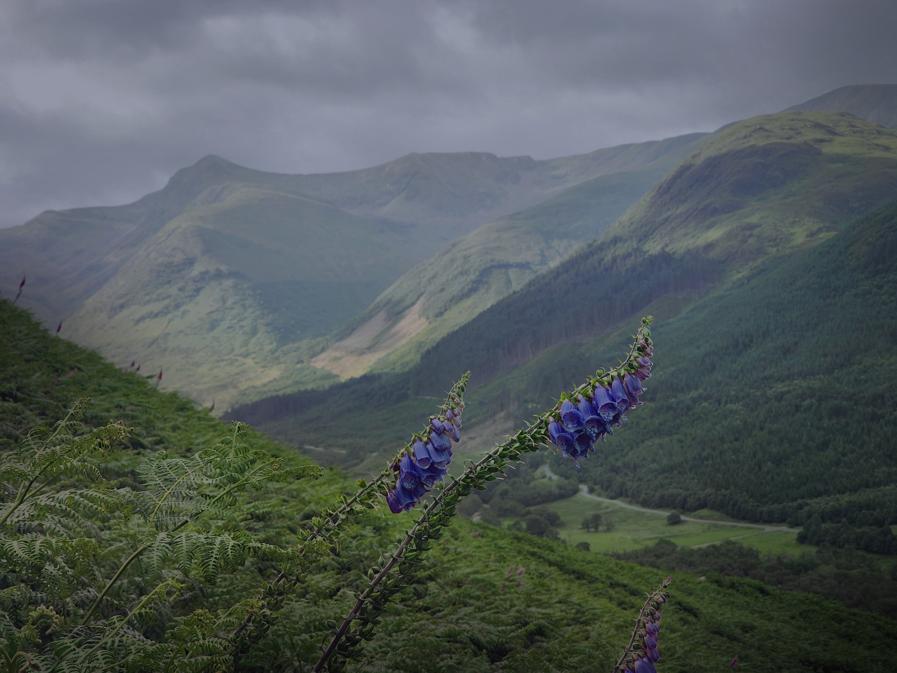
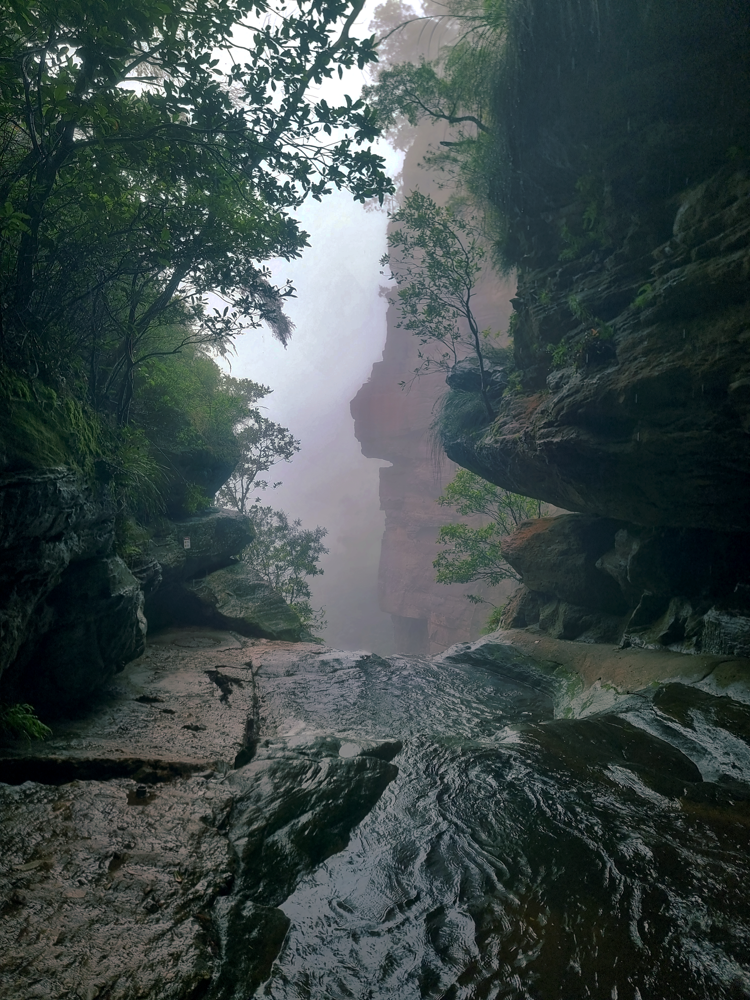
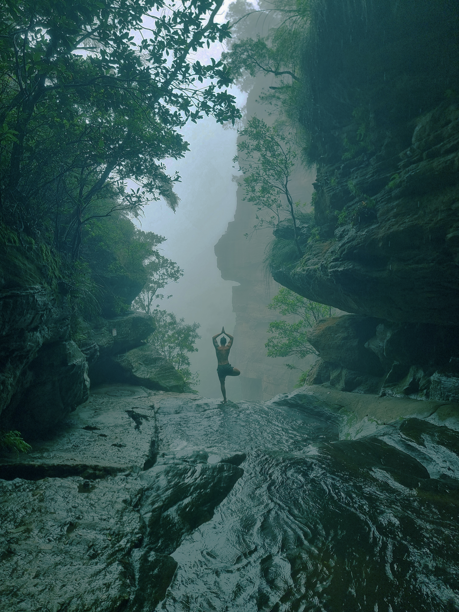
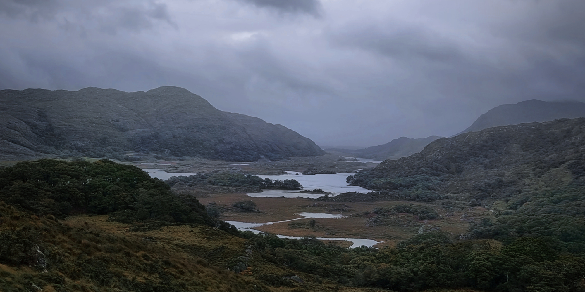

Redigerade bilder


Jag använde Nyans/mättnad och en lagermask för att ändra de lila blommorna i förgrunden till blå. Masken lät mig styra var färgbytet syntes och putsa kanterna runt kronbladen. Jag justerade också ljus, kontrast och färgbalans för att få en dovare grönska som passar resten av bildserien. En svag vinjett längs kanterna hjälper till att leda blicken mot blommorna.


Jag tog bort personen vid vattenfallet och retuscherade området så att det smälter in i omgivningen. Jag tonade också ned störande artefakter i himlen och dämpade bruset. Med Kurvor och Ljusstyrka/kontrast fick jag fram mer av klippornas struktur. Jag justerade färgbalansen för att ge skuggorna en sval, blågrön ton och behålla den dimmiga känslan.


Jag redigerade bilden i Photopea för att skapa en murrig och skogig känsla som passar ihop med de övriga bilderna i serien.
Med Kurvor ljusade jag upp mörka partier för att framhäva detaljer i bergen och växtligheten. Jag använde även Ljusstyrka/kontrast tillsammans med lagermasker för att justera utvalda områden utan att påverka hela bilden.
Färgbalans, Fotofilter och Nyans/mättnad användes för att anpassa färgerna till en svalare och mer dämpad färgskala. Målet var att behålla dramatiken i molnen och djupet i landskapet, samtidigt som detaljerna blev tydligare.